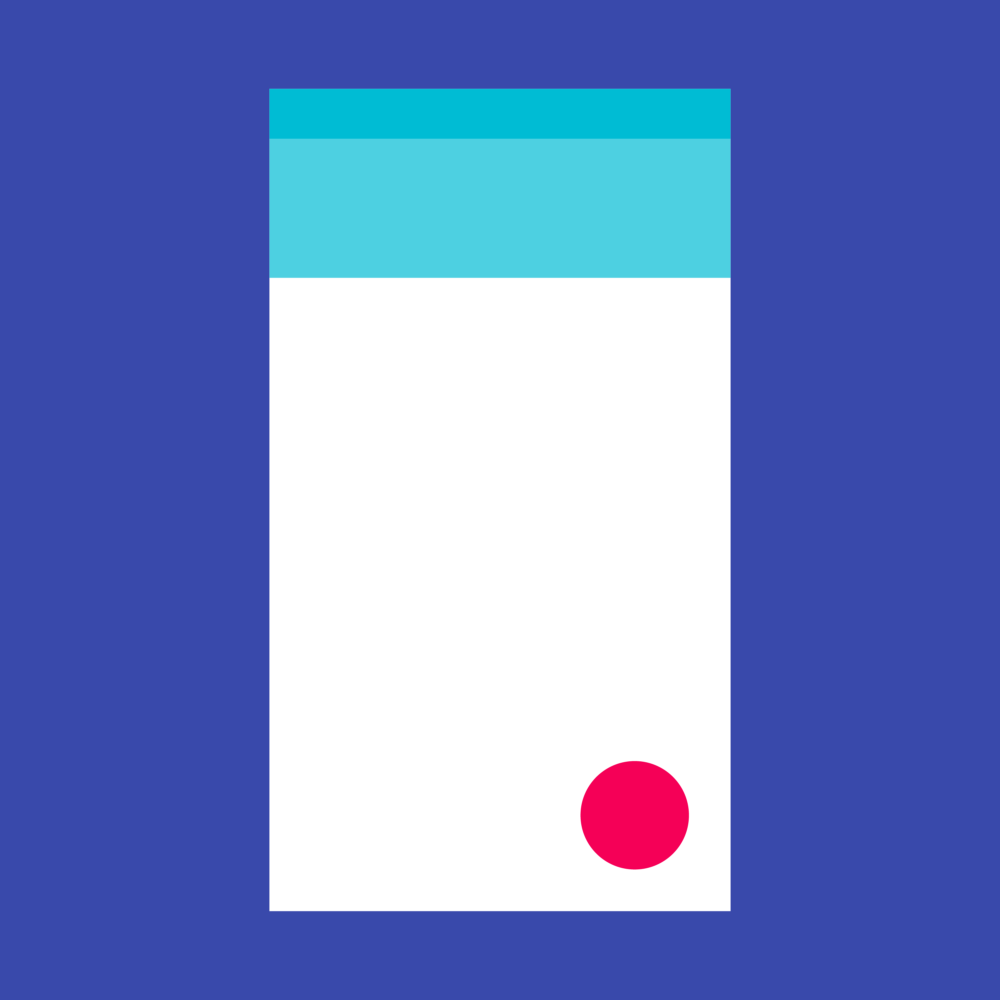

浮动操作按钮代表着应用中的主要操作。
浮动操作按钮是提升操作的优先级。
就像一个圆形的图标漂浮在界面上，它会在聚焦时改变颜色，在选中时提升海拔。按下时，它可能会展开更多相关的操作。
用法
一个屏幕上建议只使用一个浮动操作按钮，它代表最常用的操作。
行为
默认情况下，它的动画就像是一片材料在屏幕上展开。
尺寸
默认：56x56dp
小型：40x40dp

浮动操作按钮代表着应用中的主要操作。
浮动操作按钮是提升操作的优先级。
就像一个圆形的图标漂浮在界面上，它会在聚焦时改变颜色，在选中时提升海拔。按下时，它可能会展开更多相关的操作。
一个屏幕上建议只使用一个浮动操作按钮，它代表最常用的操作。
默认情况下，它的动画就像是一片材料在屏幕上展开。
默认：56x56dp
小型：40x40dp
浮动操作按钮产用来放置常用的操作。它是悬浮在 UI 上的一个圆形按钮，内部包含有一个图标，浮动操作按钮还有一些运动行为，例如变形、启动以及移动锚点。
浮动操作按钮有两种尺寸：
当屏幕宽度小于 460dp（*460dp 的设置看似不合理，也许应该是 360dp 才对，译者注） 时，浮动操作按钮的尺寸应该从默认尺寸（56dp）变成小型尺寸（40dp）。

浮动操作按钮

小型浮动操作按钮
在手机端，浮动操作按钮应该被放置在距离屏幕边框至少 16dp 的地方；在平板和桌面端应该距离屏幕边框至少 24dp。

浮动操作按钮
内部图标：24x24dp
浮动操作按钮圆形：56x56dp

小型浮动操作按钮
内部图标：24x24dp
浮动操作按钮圆形：40x40dp
浮动操作按钮在聚焦时会改变颜色，在选中时会提升海拔。
浮动操作按钮聚焦时
浮动操作按钮选中时
不是每个屏幕都需要浮动操作按钮。浮动操作按钮代表了应用中的主要操作。

对
主要操作是在相册中轻触图片，所以不需要任何按钮。

对
主要操作是添加文件。
一个屏幕上建议只使用一个浮动操作按钮，它应该只代表最常见的操作。

错

错
浮动操作按钮应当用做积极的操作，如创建、收藏、分享、导航和探索。
对
避免使用浮动操作按钮进行下面这些具有轻微破坏性的操作：
浮动操作按钮不包含应用栏的图标或状态栏通知。不要把徽章或其他元素层叠在浮动操作按钮上。

错
所有应用中的浮动操作按钮都必须是圆形的。

对
错
不要立体化浮动操作按钮。
对

错
浮动操作按钮是应用中常用操作的特例。利用它的可见性为主要的 UI 元素设计出愉悦的转场动画。
常用的转场包括触发器、工具栏、快速拨号和变换图标。当然远不止这些。浮动操作按钮非常的灵活。你可以不断的尝试以找到与整个应用以及按钮所在页面都合适的效果。
浮动操作按钮可以是简单的触发某个操作或是导航到某个页面的。UI 的变化可以跟随 FAB 触碰时的波纹动画。
浮动操作按钮可以简单的触发某个操作
浮动操作按钮让地图视图重返屏幕中心
通常来说每个界面中只使用一个浮动操作按钮。本例使用了两个浮动操作按钮，是因为它们虽有不同的功能但却同等重要。
浮动操作按钮可以变成工具栏，反过来也可以在界面滚动时从工具栏变成浮动操作按钮。工具栏可以包含相关的操作、文本和搜索框，或任何可能用到的功能。
浮动操作按钮转换为工具栏
浮动操作按钮转换为工具栏
屏幕滚动时隐藏工具栏，在必要时或者当页面滚动到顶部或底部时，工具栏可以再次展开。当用户在滚动时可以理解为用户的兴趣在页面内容上，这么做就可以为用户节省屏幕空间。
工具栏在滚动时变成浮动操作按钮
工具栏在滚动时变成浮动操作按钮
如果一个浮动操作按钮转换成了工具栏，那么这个工具栏应包含相关的操作功能。

对
本例中，用户可以选择想要添加的媒体类型。

错
不要添加意义不明或无关紧要的操作
浮动操作按钮可在按下时浮出相关操作，此时 FAB 应当依然留在界面上，再次点击可以激活常用的操作或者关闭菜单。
浮动操作按钮可以浮出相关操作
浮动操作按钮可以浮出相关操作
浮动操作按钮可以转换为包含所有操作的卡片。
浮动操作按钮转换为卡片
浮动操作按钮转换为卡片
作为通用规则，按下时出现的选项应当最少为 3 个，最多不超过 6 个（包含 FAB 本身）。如果你只有两个选项（按下 FAB 后至出现一个选项），那么只留下最重要的那个。如果有超过 6 个选项，用户会很难选择距离较远的选项。
使用最好、最独特以及最少的选项来降低用户的选择困难。

错
浮动操作按钮应该至少有 3 个选项

错
浮动操作按钮应该最多不能超过 6 个选项
不要在浮动操作按钮的选项中放置额外的菜单。用户从初始页面到目标页面最多只需要两次点击。

对
选项应该有确切的目标
错
选项不应该有额外的菜单
将额外操作放置在工具栏的菜单中。

对
菜单列表是工具栏的一部分

对
菜单列表是工具栏的一部分

错
浮动操作按钮不是菜单
错
浮动操作按钮不是菜单
如果应用的主要功能是添加文件类型，浮动操作按钮可以在首次点击后转换为相关的操作。如果出现的操作是与 FAB 不相关的，应该把这些操作放到某个菜单中。

对
浮动操作按钮可以转换成相关的操作

错
浮动操作按钮不应当转换成不相关的操作
浮动操作按钮可以包含联系人列表。列表中不应该出现不相关的操作。

对
浮动操作按钮可以转换为联系人列表

错
浮动操作按钮不能转换为不相关的操作
浮动操作按钮可以转变为一片材料，并成为应用结构的一部分。这个神奇的转变强调了按钮的功能。
当浮动操作按钮变形时，在开始和结束位置之间需要以合理的方式转换。例如，不要穿过其他的薄片元素。
变形动画应该是可逆的，材料片可以再次变回浮动操作按钮。
浮动操作按钮可以转变为一片材料，并成为应用结构的一部分。
浮动操作按钮可以转变为一片材料，并成为应用结构的一部分。
浮动操作按钮可以转变为一片材料，并铺满整个屏幕。
这种类型的转变通常用来创建新的内容。这样会造成通常无法撤销的转变，或不可逆的动画。
浮动操作按钮可以转变为一片材料，并铺满整个屏幕。
浮动操作按钮可以转变为一片材料，并铺满整个屏幕。
浮动操作按钮可以附属到扩展的应用栏上。

对
浮动操作按钮可以附属到工具栏上，或者结构化的元素上（只要没有妨碍到其他元素）。
对
浮动操作按钮可以被附属到材料片的边缘。

对
不要再屏幕中使用超过一个浮动操作按钮。

错
不要在每个元素上都关联一个浮动操作按钮。

错